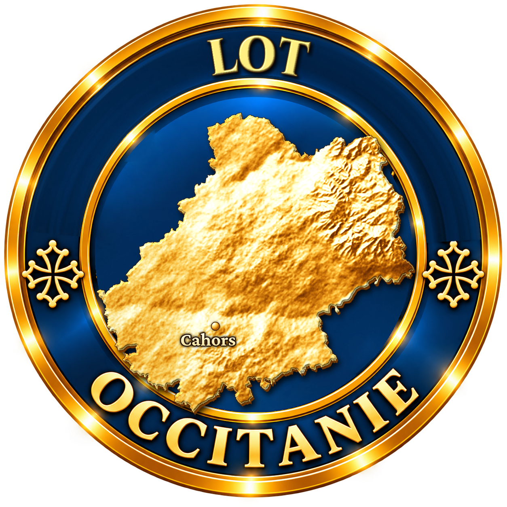
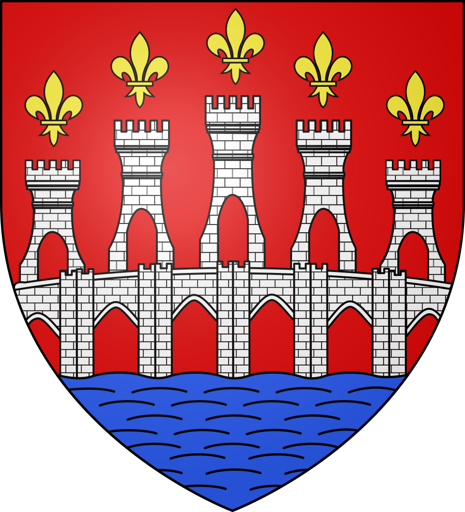

Sur le causse, la nuit tombe d'un coup.
Et ce soir-là, quelqu'un d'autre marchait sur le chemin.
Il y a bien longtemps, sur le causse de Gramat, il n'y avait pas de gouffre. Rien que des pierres, des genévriers, des murets de pierre sèche et un vieux chemin qui allait d'Autoire jusqu'à la Dordogne. Sur ce chemin, un soir, cheminait un saint homme monté sur une mule : saint Martin, qui parcourait le pays pour sauver les âmes.
La mule n'était plus toute jeune. Elle avait les oreilles tombantes et le pas lent, mais elle avait le pied sûr, et elle connaissait chaque caillou du causse.
Au détour d'un muret, saint Martin vit venir à sa rencontre un drôle de voyageur. Il portait sur son dos un grand sac qui gigotait et gémissait. Ses yeux brillaient comme des braises, et là où il posait le pied, l'herbe roussissait.
C'était le diable. Dans son sac, il emportait les âmes des pauvres gens du pays, qu'il avait attrapées en route et qu'il descendait en enfer.
« Lâche ce sac, » dit saint Martin.
Le diable éclata de rire. « Le lâcher ? Pourquoi pas. Mais il faudra le gagner. Faisons un pari, saint homme. »
Le diable leva le pied et frappa le sol d'un grand coup de talon. La terre trembla, les pierres sautèrent, le causse se fendit dans un fracas terrible. Quand la poussière retomba, il y avait devant saint Martin un trou immense, rond, si profond qu'on n'en voyait pas le fond, et d'où montait un souffle froid.
« Si ta vieille mule saute par-dessus ce trou, » ricana le diable, « je te donne toutes les âmes de mon sac. Si elle tombe dedans… eh bien, tu viendras avec moi. »
Saint Martin regarda le gouffre. Puis il regarda sa mule. La mule le regarda aussi. Elle avait l'air de dire : « Tu ne vas pas faire ça. »
Saint Martin lui caressa l'encolure et lui parla tout bas à l'oreille. Il recula de quelques pas, serra les genoux, et lança sa monture.
La vieille mule partit au galop comme jamais elle n'avait galopé. Au bord du gouffre, elle bondit. Pendant un instant, elle sembla flotter au-dessus du vide, les quatre fers tendus vers le ciel. Puis elle retomba de l'autre côté, si fort que ses sabots s'enfoncèrent dans la roche.
Les âmes du sac poussèrent un grand cri de joie, s'échappèrent, et s'envolèrent vers le ciel comme une nuée d'étourneaux.
Le diable, lui, devint tout rouge, puis tout noir. Il hurla si fort qu'on l'entendit jusqu'à Rocamadour. Et, ne sachant plus que faire de sa rage, il sauta la tête la première dans son propre trou et retourna en enfer.
Le gouffre est resté là, et on dit qu'on voit encore dans la roche la trace des sabots de la mule.
Alors, quand vous descendrez au fond… écoutez bien si quelqu'un ne ronchonne pas encore.
Pendant des siècles, le gouffre de Padirac a fait peur aux habitants du causse. On le surnommait le Trou du Diable, et on y voyait une porte de l'enfer. La légende raconte que le diable, qui emportait des âmes, aurait ouvert le gouffre d'un coup de talon pour mettre au défi saint Martin et sa mule. La mule franchit l'abîme, et on montrait autrefois l'empreinte de ses sabots dans la roche.
Une autre légende, très connue elle aussi, prétend que des soldats anglais auraient caché un trésor dans le gouffre à la fin de la guerre de Cent Ans.
La légende est une tradition orale du Quercy, sans auteur connu. Notre version est une réécriture originale de L'Âme des Régions : les dialogues, la vieille mule et la description du saut sont de notre plume. Dans certaines versions, le saint est saint Pierre et non saint Martin.
La légende appartient au domaine public, tout comme les écrits d'Édouard-Alfred Martel (mort en 1938). Aucun texte d'auteur moderne n'est reproduit ici.
Le 9 juillet 1889, Édouard-Alfred Martel, considéré comme le père de la spéléologie, descend dans le gouffre et découvre la rivière souterraine. Il n'y trouve pas le diable, mais des salles immenses.
L'entrée du gouffre mesure environ 35 mètres de diamètre. La rivière souterraine coule à 103 mètres sous terre et se visite en barque.
En 1984-1985, des chercheurs ont découvert dans une galerie des ossements de mammouths, de bisons et de lions des cavernes, vieux de 150 000 à 200 000 ans.
Malgré la peur qu'il inspirait, le gouffre servit de refuge aux habitants pendant la guerre de Cent Ans et les guerres de Religion.